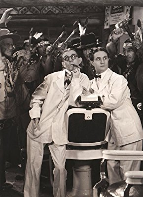

Meine Filme

Darsteller Artie Ortego
Alle Darsteller
Nr.
Titel
Jahr
FSK
Minuten
Auflösung
IMDB
Meta
Genre
8069
Drei bissen ins Gras - Gegen Terror und Banditen
1954
12
71
1080p
5.8 / 10
0
Western
11676
Gejagten, Die
1952
16
85
1080p
7.0 / 10
0
Western
4476
Mann wie der Teufel, Ein
1955
12
74
720p
6.4 / 10
0
Western
7738
Schweigsame Fremde, Der
1953
16
82
1080p
5.9 / 10
0
Krieg
9225
Unter Piratenflagge
1935
12
119
1080p
7.8 / 10
0
Action
6247
Vogelfrei
1949
16
88
720p
7.2 / 10
0
Western